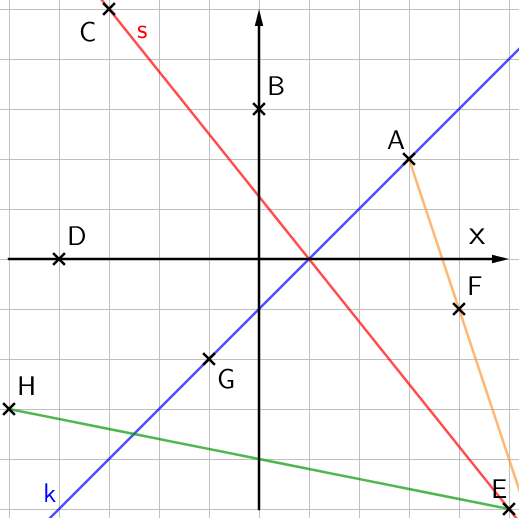
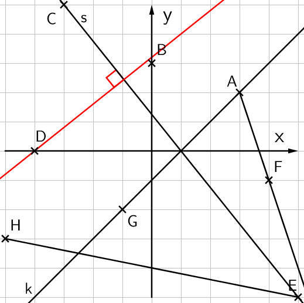

MA7 Jakso 4: Malliratkaisut
1. Kertaustehtävien malliratkaisut
Kertaustehtävä 1
Piirrä koordinaatisto, ja lisää pisteet koordinaatistoon.
c) Suorien s ja k leikkauspiste on \(\mathsf{(1,0)}\).
Kertaustehtävä 2
a) Piirrä suoralle \(\mathsf{s}\) normaali, joka kulkee pisteen \(\mathsf{D}\) kautta.
b) Suorat s ja k eivät ole yhdensuuntaisia.
Kertaustehtävä 3
Mittaa kulmien \(\mathsf{alpha}\), \(\mathsf{beta}\) ja \(\mathsf{gamma}\) arvot, ja luokittele kulmat.
\(\mathsf{\alpha = 137^\circ}\) (tylppä kulma)
\(\mathsf{\beta = 30^\circ}\) (terävä kulma)
\(\mathsf{\gamma = 193^\circ}\) (kupera kulma)